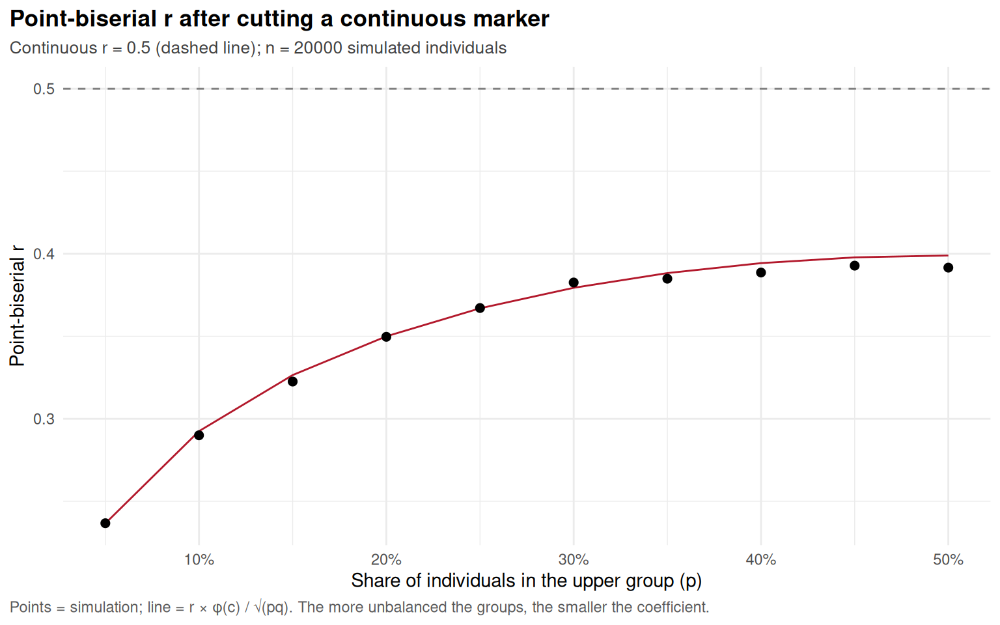
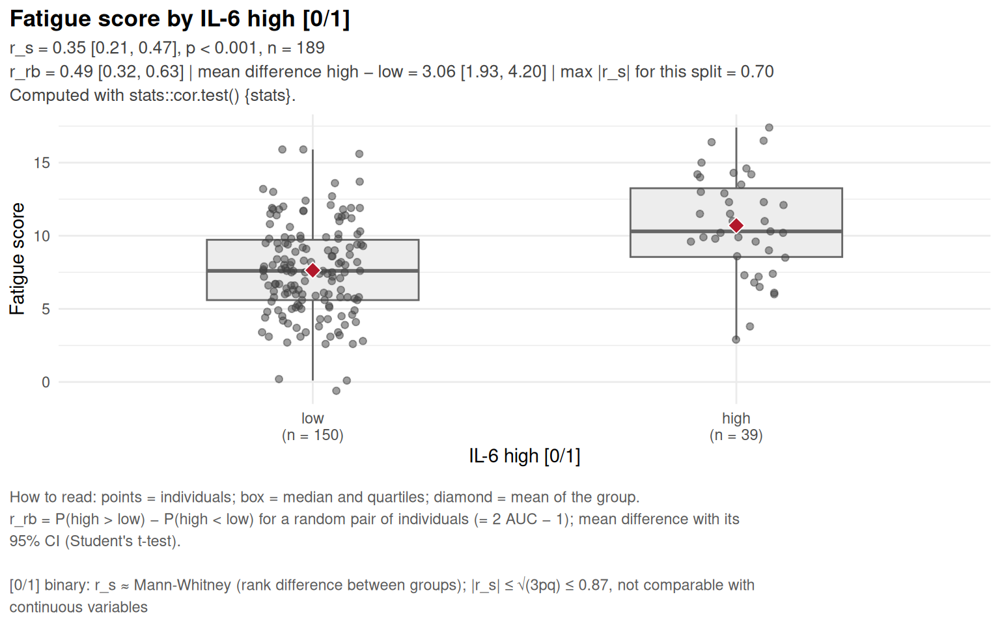
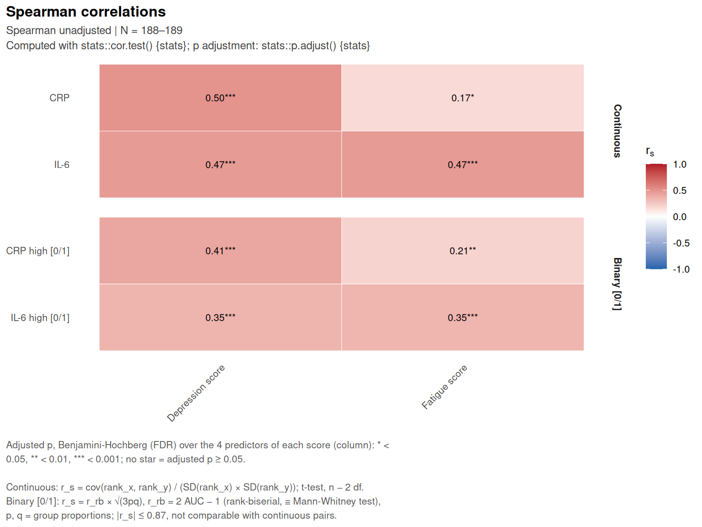

Un biomarqueur « haut » vs « bas », le sexe, un traitement : une variable à deux modalités peut entrer dans une corrélation. Le calcul est valide, mais le coefficient obtenu ne se lit pas comme celui d’une variable continue. Cette vignette explique pourquoi, ce que corrkit fait de ces variables et ce qu’il faut rapporter à la place.
Codage
as_cor_numeric() code une variable binaire en 0/1, la modalité haute (le second niveau du facteur) valant 1. Un coefficient positif signifie donc « plus élevé dans le groupe haut ». Ce recodage est une transformation linéaire croissante : il ne change ni le coefficient, ni sa p-value.
table(d$BIN_CRP, as_cor_numeric(d$BIN_CRP), useNA = "ifany")
#>
#> 0 1 <NA>
#> low 96 0 0
#> high 0 98 0
#> <NA> 0 0 6Dans les graphiques et les tableaux, les variables binaires portent la marque [0/1] (argument bin_mark) et sont rangées dans un bloc à part.
Pearson : la corrélation point-bisériale est un test t
Avec une variable 0/1, le r de Pearson est la corrélation point-bisériale :
où sont les moyennes de y dans les deux groupes, les proportions des groupes et l’écart-type de y (dénominateur n). Son test est exactement le test t de Student à variances égales :
g <- as_cor_numeric(d$BIN_CRP); y <- d$depression; ok <- complete.cases(g, y)
c(cor_test = partial_cor_test(g, y, meth = "pearson")$p.value,
t_test = t.test(y[ok & g == 1], y[ok & g == 0], var.equal = TRUE)$p.value)
#> cor_test t_test
#> 9.689758e-09 9.689758e-09Ajustée sur des covariables, c’est le test de la pente de lm(y ~ groupe + covariables) (même t, mêmes degrés de liberté).
Pourquoi le coefficient est plus petit
Un biomarqueur coupé perd de la corrélation
Quand un biomarqueur continu est coupé en deux groupes, la corrélation avec un score diminue mécaniquement. Pour une loi normale coupée au seuil c (en écarts-types), avec une proportion p au-dessus du seuil :
étant la densité de la loi normale. Le facteur vaut au plus 0,80 (coupure à la médiane) et 0,70 pour une répartition 20/80. On le vérifie par simulation :
set.seed(1)
n <- 20000; r <- 0.5
x <- rnorm(n); yy <- r * x + sqrt(1 - r^2) * rnorm(n)
sim <- do.call(rbind, lapply(seq(0.05, 0.5, by = 0.05), function(p) {
c_ <- qnorm(1 - p) # seuil : une proportion p au-dessus
b <- as.numeric(x > c_)
data.frame(p = p, observed = cor(b, yy), theory = r * dnorm(c_) / sqrt(p * (1 - p)))
}))
round(sim, 3)
#> p observed theory
#> 1 0.05 0.237 0.237
#> 2 0.10 0.290 0.292
#> 3 0.15 0.323 0.326
#> 4 0.20 0.350 0.350
#> 5 0.25 0.367 0.367
#> 6 0.30 0.383 0.379
#> 7 0.35 0.385 0.388
#> 8 0.40 0.389 0.394
#> 9 0.45 0.393 0.398
#> 10 0.50 0.392 0.399
ggplot(sim, aes(p, observed)) +
geom_hline(yintercept = r, linetype = "dashed", colour = "grey50") +
geom_line(aes(y = theory), colour = COR_PAL[["high"]]) +
geom_point(size = 2) +
scale_x_continuous(labels = function(v) paste0(100 * v, "%")) +
labs(title = "Point-biserial r after cutting a continuous marker",
subtitle = sprintf("Continuous r = %.1f (dashed line); n = %d simulated individuals", r, n),
x = "Share of individuals in the upper group (p)", y = "Point-biserial r",
caption = "Points = simulation; line = r × φ(c) / √(pq). The more unbalanced the groups, the smaller the coefficient.") +
theme_pub(11)
À effet identique, le r d’un biomarqueur binaire est donc plus petit que celui du même biomarqueur continu, et d’autant plus que les groupes sont déséquilibrés (Babchishin & Helmus 2016) : les deux ne sont pas comparables.
Spearman : un test de Mann-Whitney déguisé
Avec deux groupes, le r_s de Spearman est une corrélation de Pearson sur les rangs de y ; c’est une fonction linéaire du U de Mann-Whitney. Sans ex æquo dans y :
où est la corrélation rang-bisériale (Kerby 2014) : la probabilité qu’un individu du groupe haut ait un score plus élevé qu’un individu du groupe bas, moins la probabilité inverse. Même quand les deux groupes sont parfaitement séparés (), ne dépasse pas : 0,87 à 50/50, 0,69 à 20/80.
eff <- cor_binary_effects(d, c("BIN_CRP", "BIN_IL6"), c("depression", "fatigue"), labels = lab)
eff[, c("X", "Y", "prop1", "r_rb", "r_s", "r_s_bound")]
#> # A tibble: 4 × 6
#> X Y prop1 r_rb r_s r_s_bound
#> <chr> <chr> <dbl> <dbl> <dbl> <dbl>
#> 1 BIN_CRP depression 0.505 0.479 0.414 0.866
#> 2 BIN_CRP fatigue 0.516 0.237 0.205 0.866
#> 3 BIN_IL6 depression 0.197 0.510 0.352 0.689
#> 4 BIN_IL6 fatigue 0.206 0.493 0.346 0.701
with(eff, cbind(r_s, r_rb_x_sqrt3pq = r_rb * sqrt(3 * prop1 * (1 - prop1))))
#> r_s r_rb_x_sqrt3pq
#> [1,] 0.4144474 0.4144141
#> [2,] 0.2051657 0.2051436
#> [3,] 0.3515586 0.3515305
#> [4,] 0.3458298 0.3457938L’égalité n’est approximative que parce que les scores simulés contiennent des ex æquo.
Kendall
Le numérateur du τ de Kendall (paires concordantes − paires discordantes) ne compte que les paires prises dans deux groupes différents, et vaut : c’est encore la comparaison de Mann-Whitney, avec un maximum qui dépend de la répartition et des ex æquo.
Ce qu’il faut rapporter
La corrélation reste utile pour tester l’association (son test est celui de Student ou de Mann-Whitney). Pour la taille de l’effet, on rapporte la différence entre groupes et la corrélation rang-bisériale :
tbl_cor_binary(eff)| Binary variables: effect sizes to report | ||||||||
| Group 1 = upper level of each binary variable | N = 188–189 | raw p-values (no adjustment) | ||||||||
| Binary variable | Groups 0 / 1: n (% group 1) | Mean (SD), group 0 | Mean (SD), group 1 |
Mean difference
|
Rank-biserial correlation
|
Observed rₛ / max |rₛ| | ||
|---|---|---|---|---|---|---|---|---|
| M₁ − M₀ [95% CI] | p (t-test) | r_rb [95% CI] | p (Mann-Whitney) | |||||
| Depression score | ||||||||
| CRP high | low / high: 93 / 95 (51%) | 10.09 (4.03) | 13.36 (3.42) | 3.27 [2.20, 4.35] | < 0.001 | 0.48 [0.34, 0.60] | < 0.001 | 0.41 / 0.87 |
| IL-6 high | low / high: 151 / 37 (20%) | 11.04 (4.01) | 14.60 (3.05) | 3.56 [2.17, 4.95] | < 0.001 | 0.51 [0.34, 0.65] | < 0.001 | 0.35 / 0.69 |
| Fatigue score | ||||||||
| CRP high | low / high: 91 / 97 (52%) | 7.48 (3.12) | 8.93 (3.46) | 1.46 [0.50, 2.41] | 0.003 | 0.24 [0.08, 0.39] | 0.005 | 0.21 / 0.87 |
| IL-6 high | low / high: 150 / 39 (21%) | 7.64 (3.13) | 10.70 (3.46) | 3.06 [1.93, 4.20] | < 0.001 | 0.49 [0.32, 0.63] | < 0.001 | 0.35 / 0.70 |
| M₁ − M₀: difference in means, Student's t-test with equal variances (= test of the point-biserial r); 95% CI from stats::t.test() {stats}. | ||||||||
| r_rb = 2U / (n₀ n₁) − 1 = P(Y₁ > Y₀) − P(Y₁ < Y₀) = 2 AUC − 1, U = Mann-Whitney statistic of stats::wilcox.test() {stats} (Kerby 2014, doi:10.2466/11.IT.3.1); 95% CI from effectsize::rank_biserial() {effectsize}. | ||||||||
| Observed rₛ / max |rₛ|: Spearman correlation with the 0/1 variable and its maximum √(3pq) for this split (no ties): the correlation is bounded by the split and must not be compared with that of a continuous variable (Babchishin & Helmus 2016, doi:10.3758/s13428-015-0627-7). | ||||||||
La dernière colonne place le r_s observé à côté de son maximum pour cette répartition : un r_s de 0,30 avec un maximum de 0,69 n’a pas le même sens qu’un r_s de 0,30 entre deux variables continues.
plot_cor_pair() montre la même chose sur un graphique : les valeurs par groupe, avec r_s, r_rb et la différence de moyennes dans le sous-titre.
plot_cor_pair(d, "BIN_IL6", "fatigue", labels = lab)
Dans les heatmaps et les tableaux
Les cases qui font intervenir une variable binaire sont regroupées dans un bloc à part, et la légende donne la formule du coefficient réellement calculé :
res <- plot_cor_cross(d, c("CRP", "IL6", "BIN_CRP", "BIN_IL6"), c("depression", "fatigue"), labels = lab)
res$plot
res$note contient la note complète, et cor_binary_note() la fournit en anglais (légendes, notes de tableau) ou en français (encadrés d’un rapport), en version courte ou complète :
cor_binary_note("spearman", lang = "fr", short = TRUE)
#> [1] "[0/1] binaire : r_s ≈ Mann-Whitney (écart de rangs entre groupes) ; |r_s| ≤ √(3pq) ≤ 0,87, non comparable aux variables continues"
cat(strwrap(cor_binary_note("spearman", lang = "fr"), 90), sep = "\n")
#> Variables binaires (notées [0/1], classe haute = 1) : le r_s de Spearman est une
#> corrélation de Pearson sur les rangs ; avec deux groupes, c'est une fonction linéaire du
#> U de Mann-Whitney (même test, à l'approximation près) : il mesure si les scores tendent à
#> être mieux classés dans le groupe haut. r_s = r_rb × √(3pq), où r_rb = 2 AUC − 1 est la
#> corrélation rang-bisériale (p/q = répartition entre groupes, sans ex aequo) : |r_s| ≤
#> 0,87 à 50/50 et 0,69 à 20/80. Il n'est donc pas comparable au r_s d'un biomarqueur
#> continu : la taille de l'effet est r_rb ou la différence entre groupes. La version
#> partielle (ajustée) se lit de la même façon. (Kerby 2014, Comprehensive Psychology,
#> doi:10.2466/11.IT.3.1; Babchishin & Helmus 2016, Behav Res Methods,
#> doi:10.3758/s13428-015-0627-7).Références
- Kerby DS (2014). The simple difference formula: an approach to teaching nonparametric correlation. Comprehensive Psychology 3:11.IT.3.1. doi:10.2466/11.IT.3.1
- Babchishin KM, Helmus LM (2016). The influence of base rates on correlations: an evaluation of proposed alternative effect sizes with real-world data. Behavior Research Methods 48:1021-1031. doi:10.3758/s13428-015-0627-7
- Makowski D, Ben-Shachar MS, Patil I, Lüdecke D (2020). Methods and algorithms for correlation analysis in R. Journal of Open Source Software 5(51):2306. doi:10.21105/joss.02306